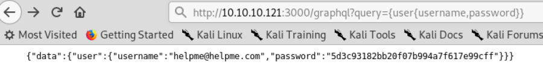

GraphQL API
GraphQL is a data query language developed by Facebook and was released in
2015.
GraphQL acts as an alternative to REST API. Rest APIs require the client to send multiple requests to
different endpoints on the API to query data from the backend database.
With graphQL you only need to send one
request to query the backend.
• Paths that identify GraphQL instances:
◇ /graphql
◇
/graphiql
◇ /graphql.php
◇ /graphql/console
• Supported queries:
https://graphql.org/learn/introspection/• Queries
supported by the endpoint:
example.com/graphql?query={__schema{types{name,fields{name}}}}
• Query a type
http://example.com/graphql?query=%7BTYPE_1%7BFIELD_1,FIELD_2}}
Bibliography:Bug
Bounty Playbook 2 (Alex Thomaz, Ghostlulz)